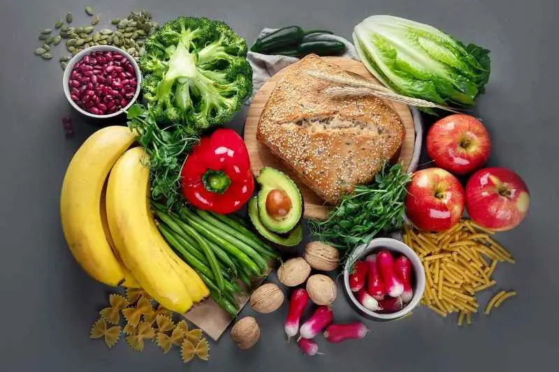
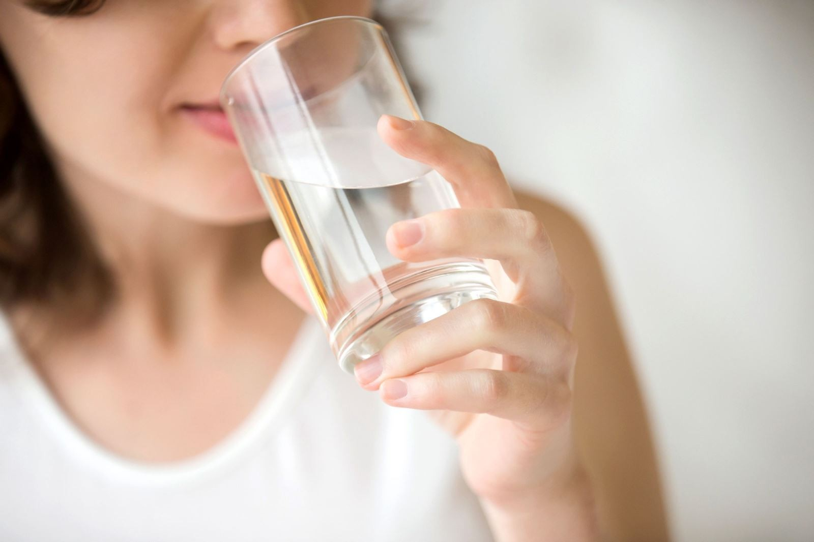

AQUABAY Doanh nghiệp văn hóa tiêu biểu thời kỳ hội nhập năm 2024
25-06-2024Người táo bón cần có chế độ ăn uống như thế nào?
1. Tầm quan trọng của chế độ ăn cho người táo bón
Táo bón là một trong những bệnh lý đường tiêu hóa phổ biến, xảy ra ở nhiều ở nhiều đối tượng từ trẻ nhỏ cho đến người cao tuổi.
Người bị táo bón sẽ gặp phải tình trạng đại tiện khó khăn. Không chỉ gây mệt mỏi, ảnh hưởng đến sinh hoạt, táo bón còn là nguyên nhân chính dẫn đến các bệnh như trĩ, sa trực tràng thậm chí là ung thư trực tràng.
Nguyên nhân chính gây nên táo bón là do chế độ ăn uống chưa hợp lý (thiếu nước, thiếu chất xơ…), ít vận động, thói quen nhịn đại tiện hoặc stress…
Cùng AQUABAY điểm qua một số lý do cho thấy chế độ ăn uống quan trọng đối với người bị táo bón:

Bổ sung chất xơ: Chất xơ đóng vai trò quan trọng trong việc thúc đẩy nhu động ruột, làm mềm phân, giúp việc đi đại tiện dễ dàng hơn.
Uống đủ nước: Nước có vai trò giúp các bộ phận hoạt động trơn tru đặc biệt là hệ tiêu hóa, giúp làm mềm phân và giúp thức ăn di chuyển qua ruột dễ dàng hơn. Người bị táo bón nên uống ít nhất 2 lít nước mỗi ngày.
Bổ sung lợi khuẩn: Lợi khuẩn là vi sinh vật có lợi cho hệ tiêu hóa, giúp hỗ trợ tiêu hóa thức ăn, tăng cường sức khỏe đường ruột.
Hạn chế thực phẩm gây táo bón: Một số thực phẩm có thể làm trầm trọng thêm tình trạng táo bón như thịt đỏ, thực phẩm chế biến sẵn, đồ ăn nhiều dầu mỡ, rượu bia, cà phê…
2. Các dưỡng chất thiết yếu cho người bị táo bón
2.1. Chất xơ
Việc thiếu chất xơ trong chế độ ăn uống là một trong những nguyên nhân phổ biến phát sinh bệnh táo bón. Chất xơ có ở trong các nguồn gốc thực vật, có 2 loại chất xơ là chất xơ hòa tan trong nước và chất xơ tan trong nước.
Chất xơ hòa tan trong nước sẽ hấp thu độ ẩm giúp phân mềm hơn và giảm được tình trạng táo bón. Chất xơ không hòa tan trong nước hút nước, tăng khối lượng chất bã khiến quá trình thải cặn bã mau hơn. Chất xơ không hòa tan sẽ không hấp thu độ ẩm nhưng tăng tốc độ di chuyển thức ăn qua ruột.
Vì vậy để cải thiện tình trạng táo bón bạn có thể tăng cường thực phẩm giàu chất xơ trong chế độ ăn uống, nhu cầu chất xơ khuyến nghị của người Việt ít nhất là 20-25g/người/ngày. Trong chế độ ăn hàng ngày, nên ăn đa dạng các thực phẩm chất xe hòa tan và không hòa tan.
2.2. Nước
Mỗi tế bào trong cơ thể chúng ta cần nước để hoạt động tốt nhất. Nếu bạn không uống đủ nước, cơ thể sẽ bị thiếu nước, mất nước. Khi bị thiếu nước và mất nước sẽ dẫn đến phân cứng, gây táo bón.
Cùng với các chất lỏng khác, dịch dạ dày và enzyme, nước hỗ trợ quá trình tiêu hóa để cơ thể hấp thụ các chất dinh dưỡng. Để đáp ứng nhu cầu nước của cơ thể, nên uống khoảng 2 lít nước mỗi ngày đối với người trưởng thành.

Để cải thiện tình trạng táo bón bạn có thể sử dụng nước ion kiềm với nhiều lợi ích cho sức khỏe. Đặc biệt, nước ion kiềm được Bộ Y tế Nhật Bản chứng nhận có hiệu quả trên các chứng bệnh liên quan đến Hệ tiêu hóa như: táo bón, trào ngược axit, ợ hơi…
AQUABAY - thương hiệu nước ion kiềm đầu tiên tại Việt Nam, với tính kiềm tự nhiên như rau xanh pH 8.5-9.5 giúp trung hòa axit dư thừa trong cơ thể, hỗ trợ tốt cho sức khỏe đặc biệt là hệ tiêu hóa.
Nước AQUABAY được sản xuất bằng công nghệ điện phân Nước tiên tiến từ Nhật Bản, nên cấu trúc phân tử nước nhỏ hơn nhiều lần so với nước uống thông thường, giúp nước thẩm thấu tới mọi ngóc ngách của tế bào, thúc đẩy quá trình trao đổi chất và đào thải độc tố ra khỏi cơ thể nhanh chóng.
Được khai thác từ mạch nước ngầm quý nên nước AQUABAY có hàm lượng khoáng tự nhiên cân bằng như Na, Ca, Mg, K… cơ thể dễ dàng hấp thu, cho sức khỏe dẻo dai.
Đặc biệt, khi tăng cường các loại thực phẩm giàu chất xơ, bạn phải uống nhiều nước. Nếu giúp cơ thể tiêu hóa chất xơ và giảm táo bón bằng cách tăng lượng phân. Vì vậy bạn cần uống đủ nước nếu không chất xơ có thể gây tác dụng ngược với táo bón.
3. Gợi ý một số thực phẩm tốt cho người bị táo bón.
3.1. Rau mồng tơi
Mồng tơi là loại rau thanh mát, giàu dinh dưỡng, dễ tiêu hóa, nhuận tràng rất tốt cho người bị táo bón. Tác dụng nhuận tràng của rau mồng tơi nhờ chất nhầy có trong rau làm mềm phân, kích thích nhu động ruột giúp phòng và điều trị táo bón hiệu quả.
3.2. Khoai lang
Khoai lang ngoài việc cung cấp lượng dinh dưỡng như: Vitamin A, C, D, E… cùng các khoáng chất thiết yếu, khoai lang cũng giàu chất xơ dùng tốt cho người bị táo bón vì nó có thể thúc đẩy quá trình chuyển hóa.
Chất xơ trong khoai lang giúp điều hòa nhu động ruột, thúc đẩy quá trình tống chất thải ra khỏi đường tiêu hóa, còn thúc đẩy lợi khuẩn phát triển trong đường ruột hỗ trợ tiêu hóa khỏe mạnh.
3.3 Táo
Táo có lượng chất xơ đáng kể từ vỏ táo, một loại chất xơ không hòa tan và pectin và một dạng chất xơ hòa tan có trong thịt quả táo.
Nghiên cứu cho thấy pectin có thể làm giảm chứng táo bón bằng cách giảm thời gian vận chuyển của phân và tăng tốc đào thải phân.
3.4. Bưởi, cam
Trong một quả bưởi và một quả cam chứa khoảng 4g chất xơ. Trái cây họ cam quýt có chất xơ hòa tan ở dạng pectin giúp giảm táo bón.
Để có hệ tiêu hóa khỏe mạnh đặc biệt làm giảm thiểu tình trạng táo bón bạn có thể thay đổi hoàn toàn bằng việc điều chỉnh chế độ ăn uống như bổ sung nhiều rau xanh, uống đủ 2-3 lít nước AQUABAY mỗi ngày. Đồng thời, kết hợp tập luyện thể dục thể thao nhẹ nhàng khoảng 30 phút mỗi ngày.